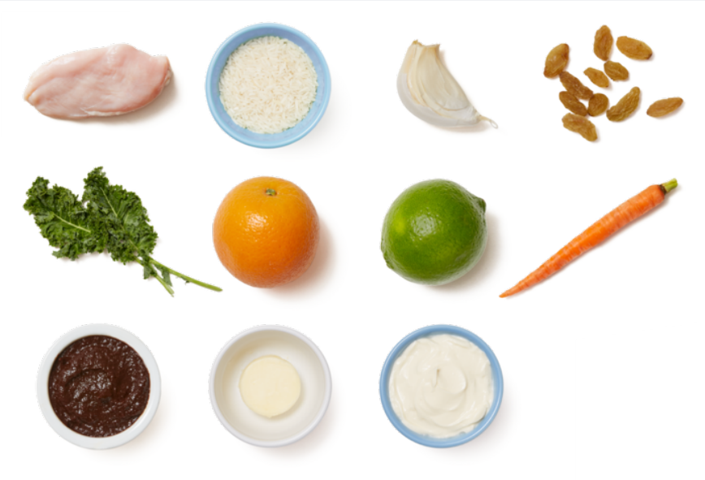
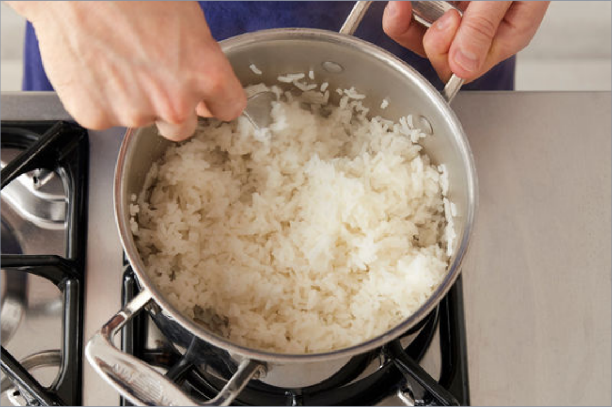
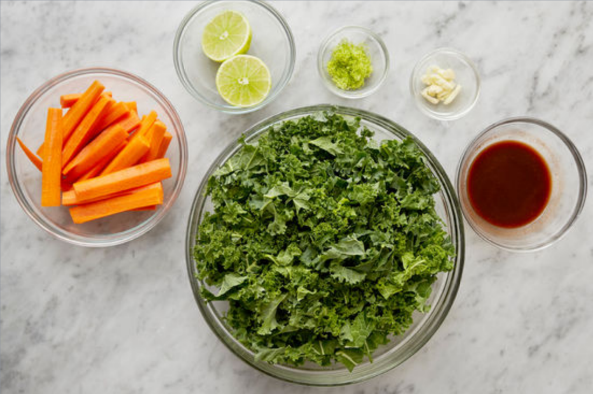
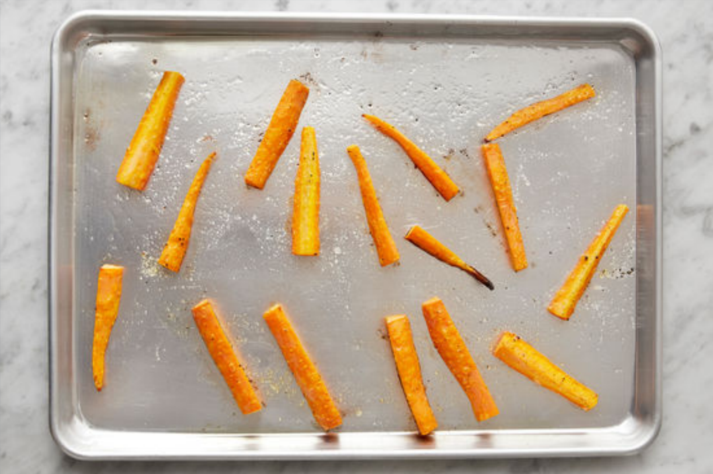
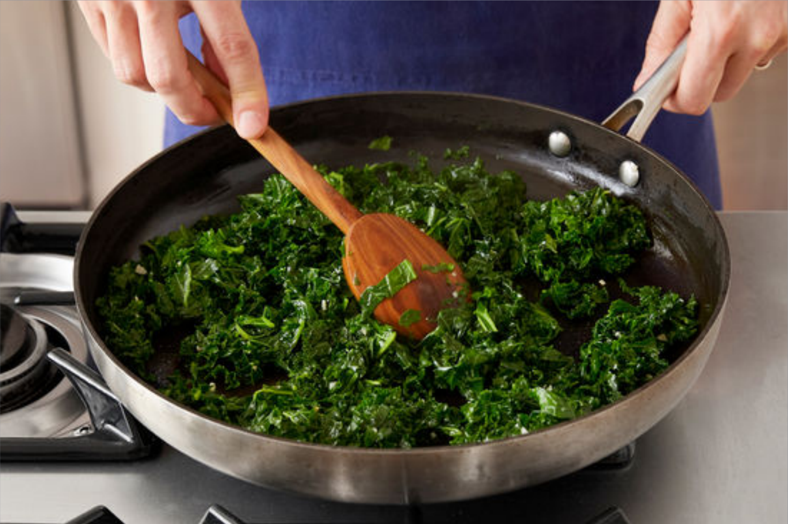
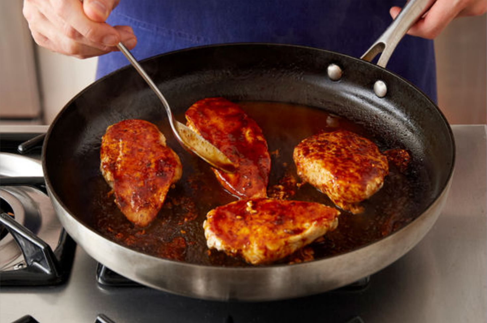
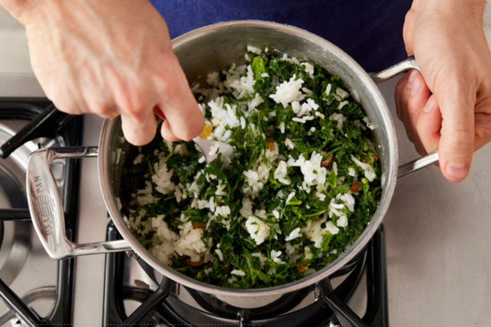

Flavor Fusion
Back to Recipes 《
Ancho-Orange Chicken
with Kale Rice 8 Roasted Carrots
45 Minutes
4 Servings
6oo Calories
Weʼre amping up chicken breasts with a glaze of smoky ancho chile paste and fresh orange juice in this
recipe. On the side, roasted carrots and lightly creamy, golden
raisin-studded rice perfectly accent the sweetness of the glaze.

4 Boneless, Skinless Chicken Breasts
1 Tbsp Ancho Chile Paste
2 Tbsps Crème Fraîche
3 Tbsps Golden Raisins
Instructions
Step1: Cook the rice

Place an oven rack in the center of the oven, then preheat to 450°F. In a
medium pot, combine the rice, a big pinch of salt, and 11/2 cups of
water. Heat to boiling on high. Once boiling, cover and reduce the heat to
low. Cook 12 to 14 minutes, or until the water has been absorbed and the rice is tender. Turn off the
heat and fluff with a fork. Cover to keep warm.
Step2: Prepare the ingredients & make the glaze

While the rice cooks, wash and dry the fresh produce. Peel the carrots;
quarter lengthwise, then halve crosswise. Peel and roughly chop the garlic.Remove and discard the stems
of the kale; finely chop the leaves. Using a
peeler, remove the lime rind, avoiding the white pith; mince to get 2
teaspoons of zest (or use a zester). Halve the lime crosswise. Halve the
orange; squeeze the juice into a bowl, straining out any seeds. Whisk in the chile paste and 2
tablespoons of water until smooth.
Step3: Roast the carrots

Place the sliced carrots on a sheet pan. Drizzle with olive oil and season with salt and pepper; toss to
coat. Arrange in an even layer. Roast 15 to 17 minutes, or until tender when pierced with a fork. Remove
from the oven.
Step4: Cook the kale

While the carrots roast, in a large pan (nonstick, if you have one), heat 2
teaspoons of olive oil on medium-high until hot. Add the chopped garlic
and cook, stirring constantly, 30 seconds to 1 minute, or until fragrant. Add
the chopped kale; season with salt and pepper. Cook, stirring occasionally,3 to 4 minutes, or until
slightly wilted. Add 1/3 cup of water; season with
salt and pepper. Cook, stirring occasionally, 3 to 4 minutes, or until the kale has wilted and the water
has cooked off. Transfer to the pot of cooked rice.Stir to combine; season with salt and pepper to
taste. Cover to keep warm.
Wipe out the pan.
Step5: Cook & glaze the chicken

While the carrots continue to roast, pat the chicken dry with paper towels;
season with salt and pepper on both sides. In the same pan, heat 2 teaspoons of olive oil on medium-high
until hot. Add the seasoned chicken and cook 4 to 6 minutes on the first side, or until browned. Flip
and cook 2 to 3 minutes, or until lightly browned. Add the glaze and cook, frequently spooning the glaze
over the chicken, 2 to 3 minutes, or until the chicken is coated and cooked
through. Turn off the heat; stir the butter and the juice of 1 lime half into the glaze until the butter
has melted. Season with salt and pepper to taste.
Step6: Finish the rice & serve your dish

To the pot of cooked rice and kale, add the lime zest, crème fraîche,
raisins, and the juice of the remaining lime half. Stir to combine;
season with salt and pepper to taste. Serve the glazed chicken with the
finished rice and roasted carrots. Top the chicken with the remaining glaze from the pan. Enjoy!